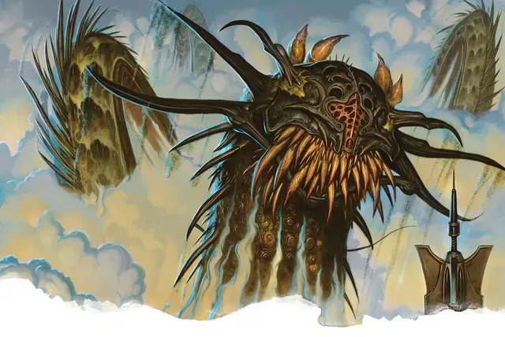

Небесный пловец
Skyswimmer
Громадный Монстр, без мировоззрения

Класс Доспеха 18 (природный доспех)
Хиты 216 (16к20 + 48)
Скорость 10 футов, летая 60 футов
| мод | спас | ||
|---|---|---|---|
| СИЛ | 23 | +6 | +6 |
| ЛОВ | 15 | +2 | +2 |
| ТЕЛ | 16 | +3 | +8 |
| мод | спас | ||
|---|---|---|---|
| ИНТ | 7 | −2 | −2 |
| МДР | 12 | +1 | +1 |
| ХАР | 6 | −2 | −2 |
Навыки Восприятие +6
Чувства пассивное Восприятие 16
Опасность 13 (10000 опыта)
Бонус мастерства +5
Особенности
Амфибия. Небесный пловец может дышать воздухом и под водой.
Действия
Мультиатака. Небесный пловец совершает три атаки: одну Укусом и две Ударом.
Укус. . Рукопашная атака оружием: +11 к попаданию, досягаемость 10 фт., одна цель. Попадание: 22 (3к10 + 6) колющего урона. Если цель — существо Большого размера или меньше, она должна преуспеть в спасброске Ловкости Сл 19, иначе небесный пловец проглотит ее. Проглоченное существо ослеплено и опутано, оно имеет полное укрытие от атак и других эффектов за пределами тела небесного пловца и получает 21 (6к6) урона кислотой в начале каждого хода небесного пловца. Если за один ход небесный пловец получает 30 или более урона от проглоченного существа, он должен преуспеть в спасброске Телосложения Сл 18 в конце этого хода, иначе извергнет существо, которое падает ничком в пространстве в пределах 10 футов от проглоченного существа. Если небесный пловец умирает, проглоченное существо больше не удерживается им и может выбраться из трупа, используя 15 футов движения, при выходе падая ничком.
Удар. . Рукопашная атака оружием: +11 к попаданию, досягаемость 30 фт., одна цель. Попадание: 19 (2к12 + 6) дробящего урона.
Описание
Небесные пловцы — это огромные хищные левиафаны, которые питаются дрейками, рух [roc], грифонами [griffon] и всем остальным, с чем они сталкиваются, паря в облаках над Равникой.